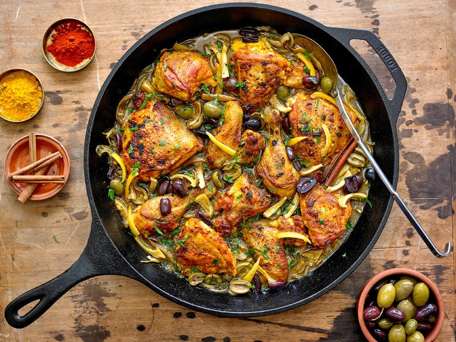

Kyckling-tagine med oliver och inlagda citroner
 4 portioner
4 portioner 3+1 h
3+1 h-
 Shallots
Shallots
 Kött
Kött
bjudbart; Storkok

- 1 kyckling
- 5 klyftor vitlök, finhackade
- 1 paket saffran
- 1 tsk torkad malen ingefära
- 2 tsk paprikapulver
- 1 tsk malen spiskummin
- 1 tsk gurkmeja
- 0.5 tsk salt
- Peppar
Dela kyckling i lagom bitar.
Blanda rubben och rubba kycklingen. Ställ i kylen 3–4 h.
- Olja
Bryn kycklingen i en gjutjärnsgryuta på alla sidor och lägg på ett fat.
- 3 gula lökar
- Valfritt annat, t.ex. selleri, morot, chili
- 1 kanelstång
Skiva löken tunt. Finhacka valfria ingredienser.
Sänk temperaturen och stek försiktigt så löken blir glansig men inte får färg (15 minuter).
- 16 gröna oliver
- 0.5 inlagd citron, skivad tunt
- Juicen från 0.5 citron
- 2.5 dl kycklingfond
- Ris
Lägg kyckling, oliver, citron och vätska i grytan och sjud under lock 30 min.
Koka ris under tiden.
- Persilja
- Bladspenat
Strö hackad persilja över kycklingen och servera med ris och bladspenat.